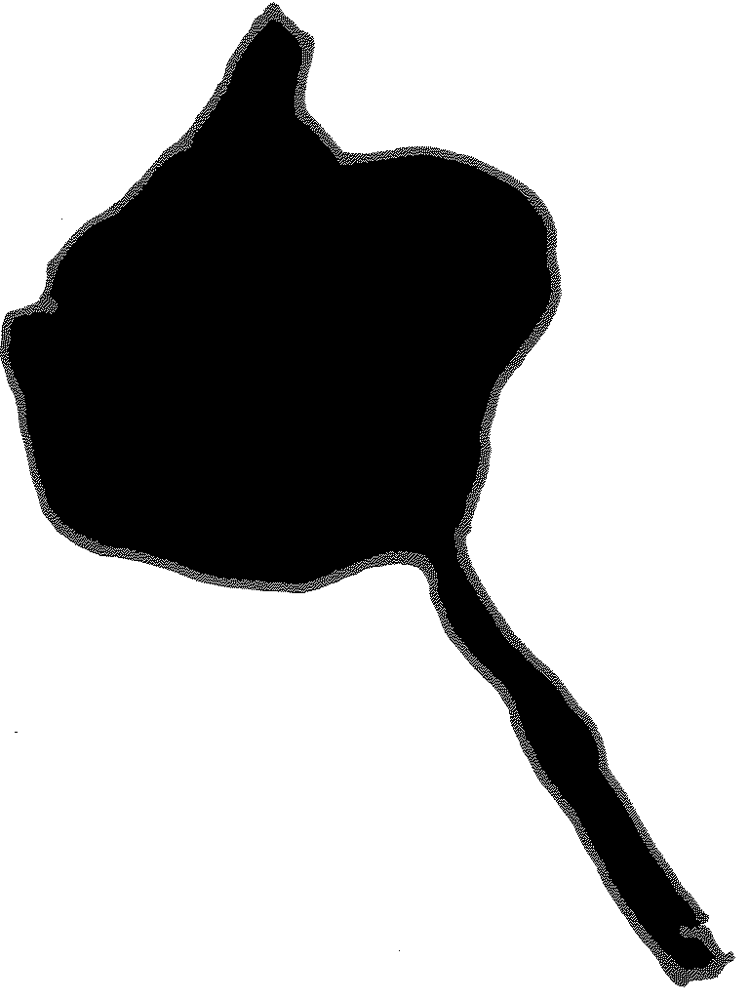
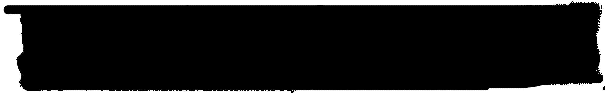
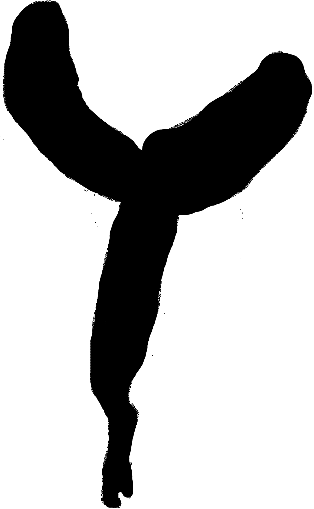
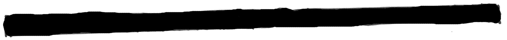

Previous




1. Go to the exact middle of the page
2. Move slightly up, down, left or right from that piece
3. Draw a star with 3 points / legs
4. The legs cannot hae the same length
5. Go to the exact middle of the page
6. Draw a perfect straight line in between the left border of the page and the middle of the page (vertical line)
7. The length of the line has to be exactly half the total height of the page, but has to be contered perfectly vertically
8. The width of the line is: 'small'
9. Go to the exact middle of the page
10. Between the bottom of the page nad the middle of the page, draw rectangle that continues to the right border of the page
11. Between the rectangle and the star draw a circular shape that looks slightly like trumps head with a thin stick as a neck
12. Trumps head should fill the gap between the star and the rectangle
Next